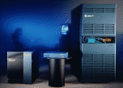

Challenge DM, L, XL
Challenge familien består av 4 servere. Challenge S er beskrevet på en egen
side. Serverene har et allsidig bruksområde. Alt fra fil-, news- og webserver
til tyngre database- eller beregningsservere. Challenge familien er velegnet
som server grunnet den høye I/O båndbredden og XFS filsystemet.
En Challenge server kan ha opptil 6/16 GB RAM og 4,7/6,3 TB disk. De
høyeste tallene gjelder for Challenge XL.
Challenge familien leveres med følgende prosessorer :
Et CPU kort til Challenge DM kan leveres med 1, 2 eller 4 CPUer.
Et CPU kort til Challenge L elle XL kan leveres med 2 eller 4 CPUer.
Challenge familien har en systembuss på hele 1,2 GB/s (sustained).
Maksimal I/O båndbredde er 960 MB/s for Challenge DM/L (3 stk I/O kort).
Maksimal I/O båndbredde er 1,2 GB/s for Challenge XL (4 stk I/O kort).
Båndbredden mellom CPU og cache er på hele 600 MB/s pr. CPU.
Båndbredden mellom CPU og memory er på hele 1,2 GB/s totalt.
En Challenge leveres med et I/O (Power Channel) kort som har følgende porter :
Dette er kun noen av de vanligste ytelsestallene for servere
(tallene gjelder pr. CPU):
150 MHz R4400SC
200 MHz R4400SC
NFSstones (LADDIS), *)
*) Ytelsestallene er utført på en 150 MHz R4400SC
Oppdatert, 6. juni 1995